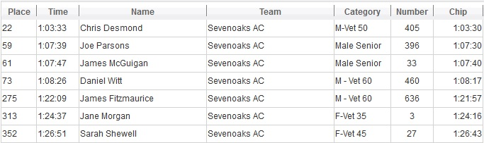

Seven SAC runners contested the Canterbury 10 on 26 January, led home by Chris Desmond. SAC results were as follows:

The full results are here.

26 January 2014
Seven SAC runners contested the Canterbury 10 on 26 January, led home by Chris Desmond. SAC results were as follows:

The full results are here.